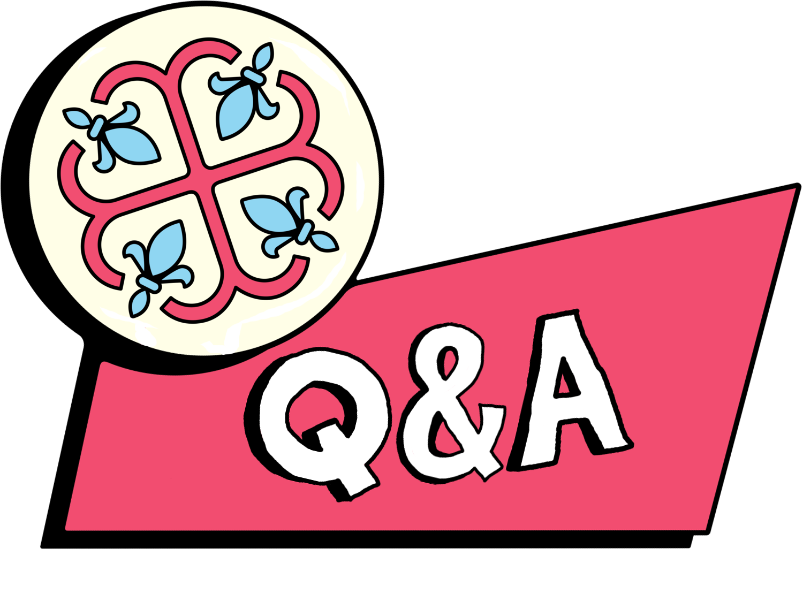

No dia 13 de Abril de 2017, Lil Peep foi convidado pelo canal MontReality para uma entrevista de Q&A (Questions & Answers; Perguntas & Respostas). Abaixo, segue alguns tópicos interessantes que Lil Peep recebeu e suas respostas.
"Eu acho incrível porque tem tantos estilos diferentes que você pode usar esses dias.
Até eu, aparentemente eu tenho uma página na Wikipédia,
e eu estava olhando ela,
e os meus gêneros estavam como alternativo, rock, r&b, hip hop, trap, emo, pop punk,
eles não sabem como chamar.
Eu acho que as pessoas só vão ter que parar de botar pessoas em caixas,
e não precisarem ficar rotulando.
Apenas aproveitem."
"Eu não sei..
Você pode acordar de novo...
Eu sei que tem algo, porque você não pode matar energia,
a energia não morre.
É apenas uma coisa estranha que sai do cérebro quando você morre.
Você consegue ver em algumas câmeras,
não sei como chamar isso, mas ela sai do seu cérebro e voa pra a atmosfera.
Eu sinto a presença de várias pessoas que já morreram.
Randomicamente, apenas aparecem na minha mente."
"Tudo muda com o tempo.
Você não pode prever onde você vai estar ano que vem,
você não tem ideia.
Teve alguns momentos da minha vida que foram muito, muito ruins. Situações horríveis.
Minha mãe sempre me aconselhou, dizendo que "O tempo iria curar tudo".
E, mesmo se demorar 5 anos e você ainda estiver sentindo como "O que estou esperando?" e que nada vai acontecer, vai demorar mais alguns anos.
Em algumas situações, demora bastante tempo, mas eventualmente as coisas vão melhorar.
E também temos que ser gratos pelo o que temos, nunca podemos ser ingratos. É nesse ponto que as pessoas começam a pensar "Eu odeio a minha vida, tudo é ruim.",
mas agora você tem tênis no seu pé.
Tem crianças que não tem acesso a água no mundo.
Tem pessoas lutando para sobreviver, então viva por eles.
Viva a vida que elas queriam viver."